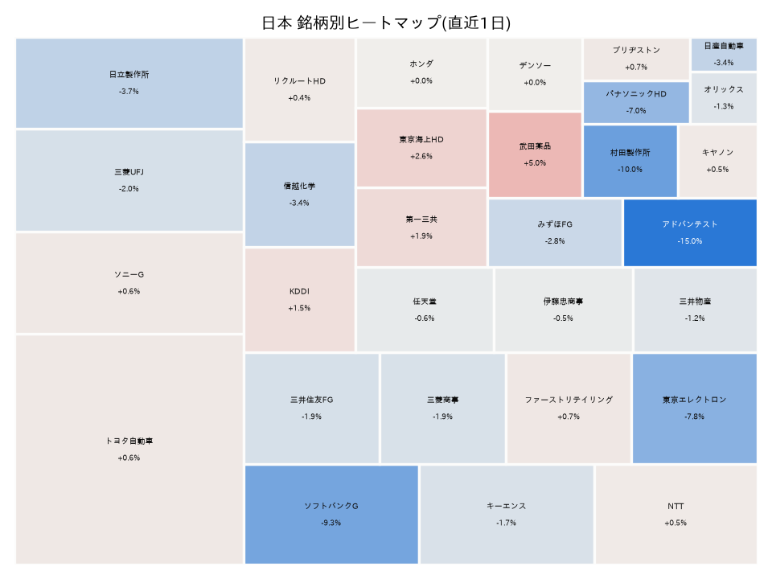
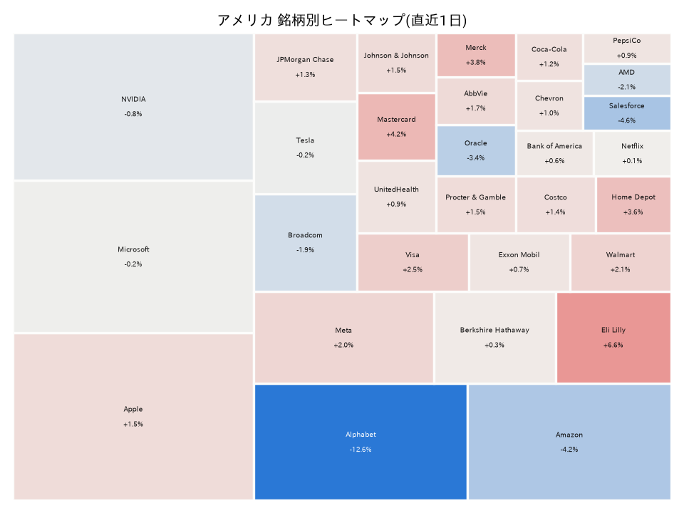
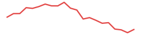
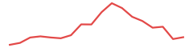
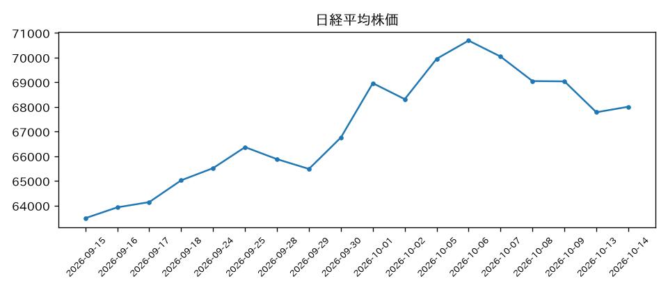
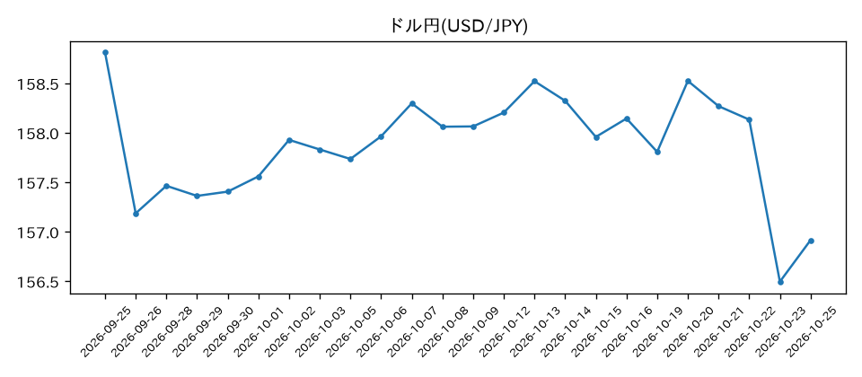
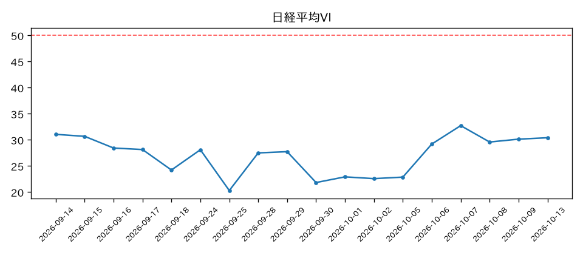
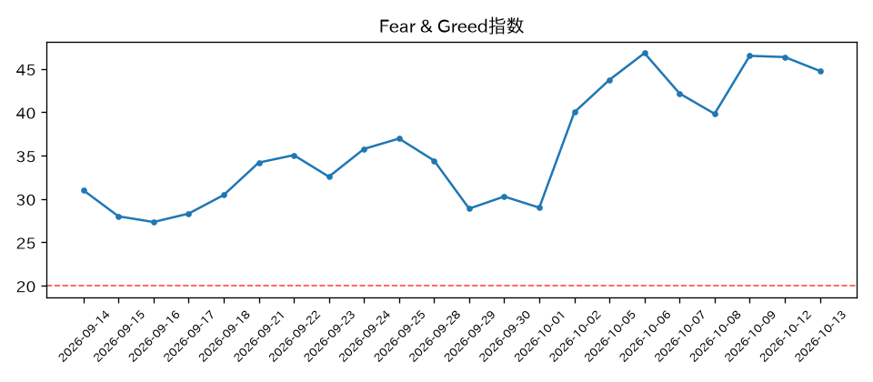

# 本日の市場分析コメント（2026年10月30日時点） ## 日経平均株価の動向 本日の日経平均は **63,365円** で終了し、前日(10/29: 64,585円)から約1,220円下落しました。月初の10/6に記録した直近高値70,684円からは約10.4%の調整となっており、下落トレンドが継続している点が注目されます。月後半にかけて62,000～64,000円台でのもみ合いが続いており、上値の重い展開が見られます。 ## 為替(ドル円)の動向 ドル円は **157.26円** 付近で推移しています。10/23に156.49円まで円高に振れた後、157～158円台での方向感に乏しい動きとなっています。本日はやや円高方向に戻しており、輸出関連株への逆風となった可能性があります。 ## リスク指標の確認 - **日経平均VI**: 直近値25.8(10/29)。月中には一時38台まで上昇する局面もありましたが、現在は警戒ライン(50)を大きく下回っており、過度なパニック的動きは見られません。 - **Fear & Greed指数**: 10/23に**16.69**と「極度の恐怖(Extreme Fear)」水準(20以下)に到達した点は特筆すべきです。また10/16(18.21)、10/22(19.99)にも20を割り込んでおり、月後半は市場心理が極度に冷え込んでいたことが確認できます。足元では34.6(10/29)まで回復しているものの、依然として「恐怖」寄りのセンチメントが続いています。 ## 総括 日経平均の調整とFear & Greed指数の低下が時期的に重なっており、市場参加者のリスク回避姿勢が株価の下押し圧力となった可能性が考えられます。一方で、VIが警戒水準に達していない点からは、投資家の不安が極端なパニックには至っていないとも読み取れます。心理指標は底打ちから持ち直しの兆しを見せていますが、株価の戻りはまだ鈍く、今後センチメント回復が株価に波及するか注視が必要です。 ※本コメントは市場データに基づく客観的な観察であり、投資判断を推奨するものではありません。 *（注：本日の該当するX投稿は確認されなかったため、SNS上の話題との関連分析は行っていません。）*
2つの底値が近い水準(3,645.6/3,706.0)で、ネックライン(3,787.0)を上抜け。上昇トレンドへの転換。
2026-10-28に材料なき前日比-2.8%の急落。そこから反発しつつあり、逆張りの買い場となる可能性(ニュースの有無は要確認)。
25日移動平均線から-16.1%乖離した後、反発の陽線。「適正価格」への回帰(引力)が期待される逆張りポイント。
2つの高値が近い水準(3,700.0/3,671.0)で、ネックライン(3,544.0)を下抜け。下降トレンドへの転換。
2つの高値が近い水準(81,680.0/81,410.0)で、ネックライン(78,970.0)を下抜け。下降トレンドへの転換。
2026-10-29に材料なき前日比-3.6%の急落。そこから反発しつつあり、逆張りの買い場となる可能性(ニュースの有無は要確認)。
株価が-2σ(統計上95.4%の範囲の外)まで到達。売られすぎの限界点に近く、反発の可能性が高まっている水準。
株価が-2σ(統計上95.4%の範囲の外)まで到達。売られすぎの限界点に近く、反発の可能性が高まっている水準。
RCI(9日)が-93.3%と-90%以下の売られすぎの極致。高確率でのリバウンドが期待される水準。
2つの高値が近い水準(3,471.0/3,429.0)で、ネックライン(3,321.0)を下抜け。下降トレンドへの転換。
前日の実体の中に当日の小さな実体が収まる。勢いが内側にせき止められ、底打ちの予兆(安値圏)
2つの高値が近い水準(5,809.0/5,840.0)で、ネックライン(5,595.0)を下抜け。下降トレンドへの転換。
2026-10-29に材料なき前日比-9.8%の急落。そこから反発しつつあり、逆張りの買い場となる可能性(ニュースの有無は要確認)。
株価が-2σ(統計上95.4%の範囲の外)まで到達。売られすぎの限界点に近く、反発の可能性が高まっている水準。
前日の値動きを飲み込む強い陰線。強い下落トレンドのサイン。
2つの高値が近い水準(6,321.0/6,175.0)で、ネックライン(6,072.0)を下抜け。下降トレンドへの転換。
2つの底値が近い水準(4,637.0/4,590.0)で、ネックライン(4,769.0)を上抜け。上昇トレンドへの転換。
2つの底値が近い水準(2,158.0/2,138.5)で、ネックライン(2,207.5)を上抜け。上昇トレンドへの転換。
前日の実体の中に当日の小さな実体が収まる。勢いが内側にせき止められ、トレンド転換の予兆
2つの底値が近い水準(5,518.4/5,639.0)で、ネックライン(5,866.3)を上抜け。上昇トレンドへの転換。
2026-10-28に材料なき前日比-6.0%の急落。そこから反発しつつあり、逆張りの買い場となる可能性(ニュースの有無は要確認)。
2つの高値が近い水準(8,855.0/8,857.0)で、ネックライン(8,446.0)を下抜け。下降トレンドへの転換。
2026-10-28に材料なき前日比-4.1%の急落。そこから反発しつつあり、逆張りの買い場となる可能性(ニュースの有無は要確認)。
窓開けで孤立した後、逆方向へ窓を開けて急落。天井のサイン。
2つの底値が近い水準(3,715.0/3,780.0)で、ネックライン(3,871.0)を上抜け。上昇トレンドへの転換。
始値と終値が拮抗し、相場の迷い・転換を示唆。
前日の値動きを飲み込む強い陰線。強い下落トレンドのサイン。
2つの高値が近い水準(355.0/353.8)で、ネックライン(337.8)を下抜け。下降トレンドへの転換。
2つの高値が近い水準(741.9/762.5)で、ネックライン(718.7)を下抜け。下降トレンドへの転換。
株価が-2σ(統計上95.4%の範囲の外)まで到達。売られすぎの限界点に近く、反発の可能性が高まっている水準。
RCI(9日)が-98.3%と-90%以下の売られすぎの極致。高確率でのリバウンドが期待される水準。
前日の値動きを飲み込む強い陽線。強い上昇トレンドのサイン。
2つの底値が近い水準(1,142.8/1,166.5)で、ネックライン(1,188.7)を上抜け。上昇トレンドへの転換。
2つの底値が近い水準(328.8/321.7)で、ネックライン(337.8)を上抜け。上昇トレンドへの転換。
窓を開けて急騰した後、ほぼ同じ長さの陽線が2本連続。上昇の本気度を示す強いサイン。
前日の実体の中に当日の小さな実体が収まる。勢いが内側にせき止められ、トレンド転換の予兆
2026-10-27に材料なき前日比-2.5%の急落。そこから反発しつつあり、逆張りの買い場となる可能性(ニュースの有無は要確認)。
始値と終値が拮抗し、相場の迷い・転換を示唆。
2つの底値が近い水準(365.2/371.0)で、ネックライン(378.6)を上抜け。上昇トレンドへの転換。
2つの底値が近い水準(555.0/549.2)で、ネックライン(567.4)を上抜け。上昇トレンドへの転換。
2つの底値が近い水準(252.9/248.6)で、ネックライン(263.7)を上抜け。上昇トレンドへの転換。
高値圏での十字線。上昇の勢いが拮抗し、下落相場への転換に注意。
2つの底値が近い水準(896.5/910.3)で、ネックライン(924.6)を上抜け。上昇トレンドへの転換。
2つの高値が近い水準(147.4/149.9)で、ネックライン(143.6)を下抜け。下降トレンドへの転換。
2026-10-26に材料なき前日比-3.2%の急落。そこから反発しつつあり、逆張りの買い場となる可能性(ニュースの有無は要確認)。
2つの底値が近い水準(128.2/125.5)で、ネックライン(131.1)を上抜け。上昇トレンドへの転換。
高値圏での十字線。上昇の勢いが拮抗し、下落相場への転換に注意。
前日の実体の中に当日の小さな実体が収まる。勢いが内側にせき止められ、トレンド転換の予兆
2つの底値が近い水準(225.3/224.6)で、ネックライン(236.7)を上抜け。上昇トレンドへの転換。
2026-10-27に材料なき前日比-2.7%の急落。そこから反発しつつあり、逆張りの買い場となる可能性(ニュースの有無は要確認)。
始値と終値が拮抗し、相場の迷い・転換を示唆。
前日の実体の中に当日の小さな実体が収まる。勢いが内側にせき止められ、トレンド転換の予兆
安値圏での十字線。下落の勢いが拮抗し、上昇相場への転換の可能性。
25日移動平均線から-9.6%乖離した後、反発の陽線。「適正価格」への回帰(引力)が期待される逆張りポイント。
株価が-2σ(統計上95.4%の範囲の外)まで到達。売られすぎの限界点に近く、反発の可能性が高まっている水準。
RCI(9日)が-95.0%と-90%以下の売られすぎの極致。高確率でのリバウンドが期待される水準。
2つの高値が近い水準(5,243.0/5,375.0)で、ネックライン(4,437.0)を下抜け。下降トレンドへの転換。
2つの高値が近い水準(6,220.0/6,250.0)で、ネックライン(6,019.0)を下抜け。下降トレンドへの転換。
前日の値動きを飲み込む強い陰線。強い下落トレンドのサイン。
株価が-2σ(統計上95.4%の範囲の外)まで到達。売られすぎの限界点に近く、反発の可能性が高まっている水準。
2つの高値が近い水準(247.1/247.2)で、ネックライン(237.4)を下抜け。下降トレンドへの転換。
安値圏での十字線。下落の勢いが拮抗し、上昇相場への転換の可能性。
25日移動平均線から-10.1%乖離した後、反発の陽線。「適正価格」への回帰(引力)が期待される逆張りポイント。
2つの高値が近い水準(1,832.0/1,864.0)で、ネックライン(1,754.0)を下抜け。下降トレンドへの転換。
2つの高値が近い水準(3,871.0/3,796.0)で、ネックライン(3,601.0)を下抜け。下降トレンドへの転換。
株価が-2σ(統計上95.4%の範囲の外)まで到達。売られすぎの限界点に近く、反発の可能性が高まっている水準。
前日の実体の中に当日の小さな実体が収まる。勢いが内側にせき止められ、底打ちの予兆(安値圏)
RCI(9日)が-95.0%と-90%以下の売られすぎの極致。高確率でのリバウンドが期待される水準。
前日の値動きを飲み込む強い陰線。強い下落トレンドのサイン。


| ルネサスエレクトロニクス | 2,838円 | -3.99% | |
| キオクシアHD | 13,245円 | -8.69% | |
| ローム | 3,603円 | -6.59% |
| 東京エレクトロン | 9,604円 | -4.29% | |
| アドバンテスト | 33,950円 | -8.32% | |
| SCREENホールディングス |
 |
11,220円 | -7.08% |
| ファナック | 5,753円 | -0.72% | |
| 安川電機 | 4,069円 | -2.16% | |
| キーエンス | 78,380円 | +2.65% |
| ソフトバンクグループ | 4,517円 | -5.20% | |
| NEC | 4,832円 | -2.46% | |
| 富士通 | 3,634円 | -15.92% |
| NTT | 174円 | +1.22% | |
| KDDI | 2,814円 | +1.30% | |
| ソフトバンク | 234円 | +0.52% |
| 富士通 | 3,634円 | -15.92% | |
| NEC | 4,832円 | -2.46% | |
| NTT | 174円 | +1.22% |
| ACSL | 1,061円 | -2.03% | |
| ヤマハ発動機 | 1,732円 | -0.17% | |
| SUBARU | 2,648円 | +1.13% |
| 住友電気工業 | 1,778円 | -4.95% | |
| 古河電気工業 | 2,892円 | -5.64% | |
| フジクラ | 3,947円 | -5.91% |
| トヨタ自動車 | 3,071円 | -0.19% | |
| パナソニックHD | 3,549円 | -3.64% | |
| TDK |
 |
2,574円 | -7.12% |
| 三菱重工業 | 3,459円 | -1.14% | |
| IHI | 2,354円 | +0.73% | |
| 川崎重工業 | 2,142円 | -0.93% |
現在値: 63,365.37

現在値: 157.26

現在値: 25.80

現在値: 34.60

投稿がありません。